Adding a Ventilation Unit
The following properties can be configured for various ventilation units (heating coils, cooling coils, humidifier):
- Hydraulics type
- Pipe length
- From the Home tab, in the Modes group, conduct one of the following actions:
- Click Design
 . Previously rotated objects appear in the default direction.
. Previously rotated objects appear in the default direction. - (Optional) Click Test
 . In this case, the fan is not displayed to scale.
. In this case, the fan is not displayed to scale. - In the System Browser, select Logical View.
- Select Logical > [Network name] \...\ [Plant] >
- [PreHcl (preheater)]
- [ReHcl (reheater)]
- [Ccl (cooling coils)]
- [Hum (humidifier)]
- Drag the object to the graphics page.
- The added object displays at the maximum scale. This ensures that the next object does not overlap.
Objects for Air Handling | ||
Heating coils | Cooling coils | Humidifier |
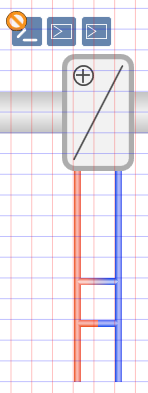 | 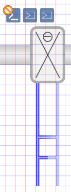 | 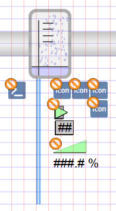 |
Determining Hydraulics
Various types of hydraulics can be defined for heating coils and cooling coils.
- The heating coil or cooling coil symbol is added to the graphic.
- In the View tab, select Properties.
- The Symbol Properties dialog box is enabled.
- In the Mode group, click Test.
- The symbol displays as per the imported data points.
- Select Symbol Properties > Substitutions.
- In the Circuit Type field, enter a number between 0 and 2 (see Table Hydraulic Types for Heating and Cooling Coils).
- Click ENTER or change to another entry field to activate the change.
Hydraulic Types for Heating and Cooling Coils | ||
0 | 1 | 2 |
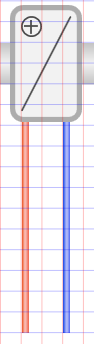 | 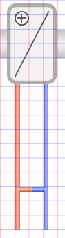 | 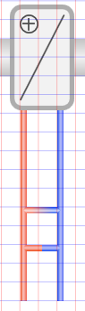 |
Resizing the Mixing Position
The mixing position for hydraulics can be modified for the heating coils and cooling coils.
- The heating coil or cooling coil symbol is added to the graphic.
- In the View tab, select Properties.
- The Symbol Properties dialog box is enabled.
- In the Mode group, click Test.
- Select Symbol Properties > Substitutions.
- In the Mixing Position text field, enter a number from ‒48 to +96 (see Table Mixing Position of Hydraulics).
NOTE: Enter an offset in grid 12. The three-way valve is no longer displayed as a mixing pipe once grid 12 is no longer used. - Click ENTER or change to another entry field to activate the change.
Mixing Position of Hydraulics | ||
‒12 | 0 (Default) | 24 |
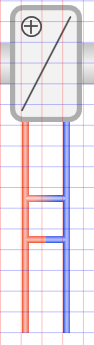 | 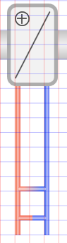 | |
Modifying Pipe Length
The length of the pipes can be modified for heating coils, cooling coils, and humidifiers.
- The heating coil, cooling coil, or humidifier symbol is added to the graphic.
- In the View tab, select Properties.
- The Symbol Properties dialog box is enabled.
- In the Mode group, click Test.
- Select Symbol Properties > Substitutions.
- In the Size field, enter a number between 30 and 200 (see Table Modifying Pipe Length).
- Click ENTER or change to another entry field to activate the change.
Modifying Pipe Length | ||
30 | 132 (Default) | 200 |
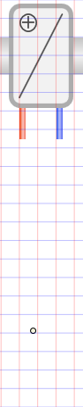 | 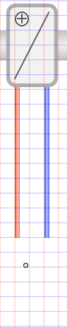 | 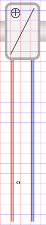 |